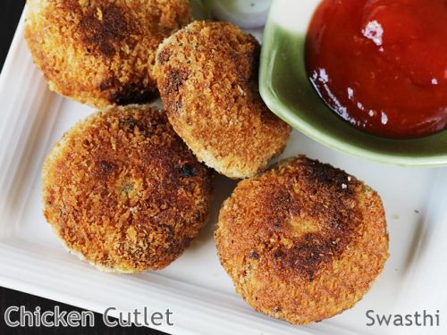

Chicken Cutlets

Ingredients
- Chicken ½ kg
- Chopped Onions ½ cup
- Green Chillies 1
- Coriander Leaves
- handful
- Mint Leaves few
- Garam masala Powder 1 ½ tsp
- Bread Crumbs ½ cup
- Chickpea Flour ¼ cup
- Salt as needed
- Oil for frying
- Boiled Potato 1
- Boiled Peas ½ cup
Buy These Ingredients Now
Cooking Directions
- Boil chicken until completely cooked.
- Cool the chicken and mince it in a food processor.
- Add onions, chili, garam masala, ginger garlicpaste, salt, red chili powder, turmeric and coriander leaves.
- Mix all together and add flour little by little only as needed.
- Knead the mixture to a dough without adding water.
- Onions release moisture and bind the mixture well.
- Make 8 to 9 patties.
- Make a batter using flour and very little salt or beat an egg with salt.
- Dip the patty in batter or egg and then immediately in the bread crumbs. R
- Serve hot with ketchup or green chutney.